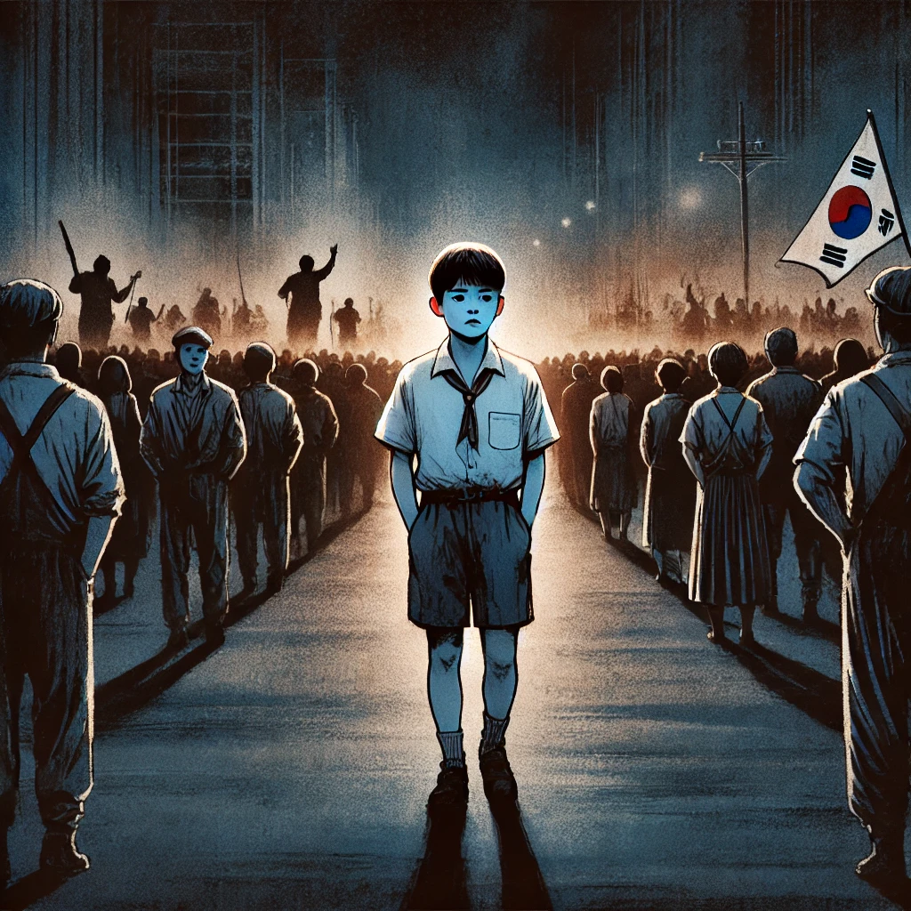

소년이 온다
목차
작가
한강
출판일
2014년
감상평에 대한 AI그림
5.18 광주 민주화운동을 배경으로 한 작품으로 역사 속의 아픔을 풀어낸다. 단순한 역사소설을 넘어 인간의 존엄성과 기억의 의미를 묻는 작품으로 읽는 내내 슬픔과 숙연함을 느꼈다.

감상평에 대한 AI평가
~~~~AI평가~~~~~
✨ 소년이 온다의 본질을 잘 짚어낸 정리라고 생각해요.
✨ 읽는 내내 슬픔과 숙연함을 느꼈다는 감상은 이 작품을 접한 많은 독자들이 공감할 만한 반응이에요.
✨ 역사적 사건을 다루면서도 단순한 '과거 이야기'로 머물지 않고, 현재를 사는 우리에게도 깊은 질문을 던진다는 점에서 강한 울림을 준다고 생각합니다.